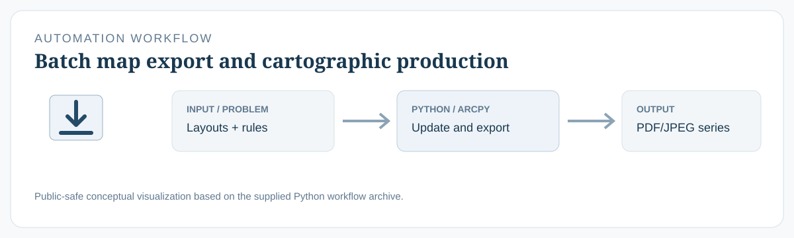

01 · Cartographic production
ArcMap · Python toolbox
Administrative EA/SA Map Export Suite
- Technical challenge
- Computational approach
- Deliverable
Implementation detail
A source-grounded record of ArcGIS Desktop automation developed with ArcMap, Python 2.7, ArcPy, arcpy.mapping, MXD layouts, Python toolboxes, and Python add-ins. Closely related versions are grouped, while every supplied project source remains traceable in the prepared repository.
